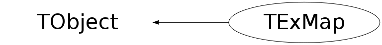

Function Members (Methods)
public:
| TExMap(Int_t mapSize = 100) | |
| TExMap(const TExMap& map) | |
| virtual | ~TExMap() |
| void | TObject::AbstractMethod(const char* method) const |
| void | Add(Long64_t key, Long64_t value) |
| void | Add(ULong64_t hash, Long64_t key, Long64_t value) |
| void | AddAt(UInt_t slot, ULong64_t hash, Long64_t key, Long64_t value) |
| virtual void | TObject::AppendPad(Option_t* option = "") |
| virtual void | TObject::Browse(TBrowser* b) |
| Int_t | Capacity() const |
| static TClass* | Class() |
| virtual const char* | TObject::ClassName() const |
| virtual void | TObject::Clear(Option_t* = "") |
| virtual TObject* | TObject::Clone(const char* newname = "") const |
| virtual Int_t | TObject::Compare(const TObject* obj) const |
| virtual void | TObject::Copy(TObject& object) const |
| virtual void | Delete(Option_t* opt = "") |
| virtual Int_t | TObject::DistancetoPrimitive(Int_t px, Int_t py) |
| virtual void | TObject::Draw(Option_t* option = "") |
| virtual void | TObject::DrawClass() constMENU |
| virtual TObject* | TObject::DrawClone(Option_t* option = "") constMENU |
| virtual void | TObject::Dump() constMENU |
| virtual void | TObject::Error(const char* method, const char* msgfmt) const |
| virtual void | TObject::Execute(const char* method, const char* params, Int_t* error = 0) |
| virtual void | TObject::Execute(TMethod* method, TObjArray* params, Int_t* error = 0) |
| virtual void | TObject::ExecuteEvent(Int_t event, Int_t px, Int_t py) |
| void | Expand(Int_t newsize) |
| virtual void | TObject::Fatal(const char* method, const char* msgfmt) const |
| virtual TObject* | TObject::FindObject(const char* name) const |
| virtual TObject* | TObject::FindObject(const TObject* obj) const |
| virtual Option_t* | TObject::GetDrawOption() const |
| static Long_t | TObject::GetDtorOnly() |
| virtual const char* | TObject::GetIconName() const |
| virtual const char* | TObject::GetName() const |
| virtual char* | TObject::GetObjectInfo(Int_t px, Int_t py) const |
| static Bool_t | TObject::GetObjectStat() |
| virtual Option_t* | TObject::GetOption() const |
| Int_t | GetSize() const |
| virtual const char* | TObject::GetTitle() const |
| virtual UInt_t | TObject::GetUniqueID() const |
| Long64_t | GetValue(Long64_t key) |
| Long64_t | GetValue(ULong64_t hash, Long64_t key) |
| Long64_t | GetValue(ULong64_t hash, Long64_t key, UInt_t& slot) |
| virtual Bool_t | TObject::HandleTimer(TTimer* timer) |
| virtual ULong_t | TObject::Hash() const |
| virtual void | TObject::Info(const char* method, const char* msgfmt) const |
| virtual Bool_t | TObject::InheritsFrom(const char* classname) const |
| virtual Bool_t | TObject::InheritsFrom(const TClass* cl) const |
| virtual void | TObject::Inspect() constMENU |
| void | TObject::InvertBit(UInt_t f) |
| virtual TClass* | IsA() const |
| virtual Bool_t | TObject::IsEqual(const TObject* obj) const |
| virtual Bool_t | TObject::IsFolder() const |
| Bool_t | TObject::IsOnHeap() const |
| virtual Bool_t | TObject::IsSortable() const |
| Bool_t | TObject::IsZombie() const |
| virtual void | TObject::ls(Option_t* option = "") const |
| void | TObject::MayNotUse(const char* method) const |
| virtual Bool_t | TObject::Notify() |
| void | TObject::Obsolete(const char* method, const char* asOfVers, const char* removedFromVers) const |
| static void | TObject::operator delete(void* ptr) |
| static void | TObject::operator delete(void* ptr, void* vp) |
| static void | TObject::operator delete[](void* ptr) |
| static void | TObject::operator delete[](void* ptr, void* vp) |
| void* | TObject::operator new(size_t sz) |
| void* | TObject::operator new(size_t sz, void* vp) |
| void* | TObject::operator new[](size_t sz) |
| void* | TObject::operator new[](size_t sz, void* vp) |
| Long64_t& | operator()(Long64_t key) |
| Long64_t& | operator()(ULong64_t hash, Long64_t key) |
| TExMap& | operator=(const TExMap&) |
| virtual void | TObject::Paint(Option_t* option = "") |
| virtual void | TObject::Pop() |
| virtual void | TObject::Print(Option_t* option = "") const |
| virtual Int_t | TObject::Read(const char* name) |
| virtual void | TObject::RecursiveRemove(TObject* obj) |
| void | Remove(Long64_t key) |
| void | Remove(ULong64_t hash, Long64_t key) |
| void | TObject::ResetBit(UInt_t f) |
| virtual void | TObject::SaveAs(const char* filename = "", Option_t* option = "") constMENU |
| virtual void | TObject::SavePrimitive(ostream& out, Option_t* option = "") |
| void | TObject::SetBit(UInt_t f) |
| void | TObject::SetBit(UInt_t f, Bool_t set) |
| virtual void | TObject::SetDrawOption(Option_t* option = "")MENU |
| static void | TObject::SetDtorOnly(void* obj) |
| static void | TObject::SetObjectStat(Bool_t stat) |
| virtual void | TObject::SetUniqueID(UInt_t uid) |
| virtual void | ShowMembers(TMemberInspector& insp) |
| virtual void | Streamer(TBuffer& b) |
| void | StreamerNVirtual(TBuffer& b) |
| virtual void | TObject::SysError(const char* method, const char* msgfmt) const |
| Bool_t | TObject::TestBit(UInt_t f) const |
| Int_t | TObject::TestBits(UInt_t f) const |
| virtual void | TObject::UseCurrentStyle() |
| virtual void | TObject::Warning(const char* method, const char* msgfmt) const |
| virtual Int_t | TObject::Write(const char* name = 0, Int_t option = 0, Int_t bufsize = 0) |
| virtual Int_t | TObject::Write(const char* name = 0, Int_t option = 0, Int_t bufsize = 0) const |
protected:
| virtual void | TObject::DoError(int level, const char* location, const char* fmt, va_list va) const |
| void | TObject::MakeZombie() |
private:
| Int_t | FindElement(ULong64_t hash, Long64_t key) |
| void | FixCollisions(Int_t index) |
| Bool_t | HighWaterMark() |
Data Members
public:
| enum TObject::EStatusBits { | kCanDelete | |
| kMustCleanup | ||
| kObjInCanvas | ||
| kIsReferenced | ||
| kHasUUID | ||
| kCannotPick | ||
| kNoContextMenu | ||
| kInvalidObject | ||
| }; | ||
| enum TObject::[unnamed] { | kIsOnHeap | |
| kNotDeleted | ||
| kZombie | ||
| kBitMask | ||
| kSingleKey | ||
| kOverwrite | ||
| kWriteDelete | ||
| }; |
Class Charts
{kind=link}
{kind=link}
{kind=link}
{kind=link}

Function documentation
void Add(ULong64_t hash, Long64_t key, Long64_t value)
Add an (key,value) pair to the table. The key should be unique.
void AddAt(UInt_t slot, ULong64_t hash, Long64_t key, Long64_t value)
Add an (key,value) pair to the table. The key should be unique. If the 'slot' is open, use it to store the value, otherwise revert to Add(hash,key,value) This is usually used in conjuction with GetValue wiht 3 parameters: if ((idx = (ULong64_t)fMap->GetValue(hash, key, slot)) != 0) { } else { fMap->AddAt(slot,hash,key,value); }
Long64_t & operator()(ULong64_t hash, Long64_t key)
Long64_t GetValue(ULong64_t hash, Long64_t key)
Return the value belonging to specified key and hash value. If key not found return 0.
Long64_t GetValue(ULong64_t hash, Long64_t key, UInt_t& slot)
Return the value belonging to specified key and hash value. If key not found return 0. In 'slot', return the index of the slot used or the first empty slot. (to be used with AddAt).
Int_t FindElement(ULong64_t hash, Long64_t key)
Find an entry with specified hash and key in the TExMap. Returns the slot of the key or the next empty slot.
Long64_t & operator()(ULong64_t hash, Long64_t key)